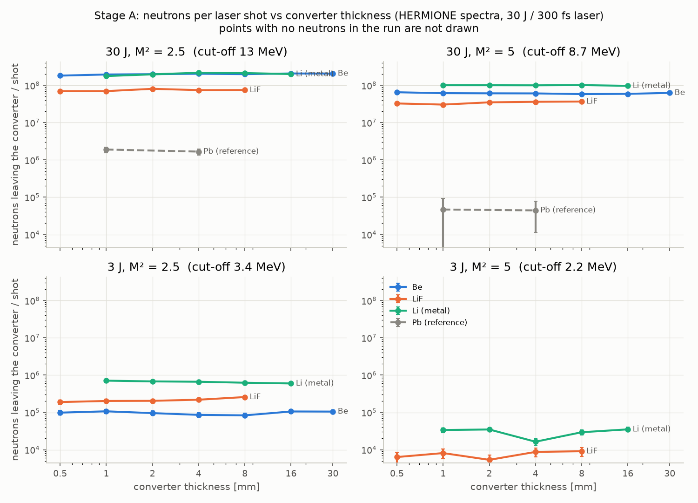

כמה פרוטונים מפספסים את הממיר?
בריצת ה-Be הממיר הוא דיסקה ברדיוס 22 mm, שהפאה הקדמית שלה נמצאת 45 mm מהמקור. הפרוטונים יוצאים מהמקור בקונוס עם חצי זווית של \(20^\circ\), אחידים בזווית המרחבית. בפרק הזה נלמד איך Geant4 בונה את כל זה, ואיך בודקים שהוא בנה את מה שהתכוונו.
לפני הכול שאלה של גיאומטריה פשוטה, מהסוג שכדאי לשאול לפני כל ריצה. הציור בקנה מידה, אבל עוד בלי הפרוטונים.
אף פרוטון לא מפספס. בעומק \(z\) הרדיוס של הקונוס הוא \(z\tan\theta\): בפאה הקדמית \(45\tan 20^\circ = 16.4\) mm, ובפאה האחורית של Be בעובי 2 mm, ב-47 mm, הוא 17.1 mm. שניהם קטנים מ-22 mm, ולכן כל הפרוטונים נכנסים בפאה הקדמית, ואף אחד מהם לא יכול לצאת מהדופן בדרך.
זו לא רק בדיקה על הנייר. סקריפט בדיקת הקלט של ldns בודק את אותו דבר על הפרוטונים שנורו בפועל, ובריצת ה-Be הוא אישר: 16.4 mm מול 22 mm, אין אובדן פרוטונים.
צורה, נפח לוגי, נפח פיזי
Geant4 בונה כל חלק של הגיאומטריה בשלוש קומות. למטה צורה (solid): רק גיאומטריה, כמו גליל עם רדיוס ועובי. מעליה נפח לוגי (logical volume): צורה ועוד חומר. ולמעלה נפח פיזי (physical volume): נפח לוגי שהוצב במקום מסוים, בתוך נפח אם (mother), עם מספר עותק (copy number).
הכול גר בתוך נפח אחד גדול, העולם (World), שאין לו אם. ב-ldns כל שכבה של הממיר היא גליל, G4Tubs, והשכבות נבנות לפי סדר הפקודות /ldns/det/addLayer, מהמקור והלאה. בציור Be בעובי 2 mm כבר בנוי, החל מ-45 mm.
כל שכבה מתחילה איפה שהקודמת נגמרה. ככה זה נראה בקוד, בלולאה של DetectorConstruction::Construct ב-src/DetectorConstruction.cc: צורה, נפח לוגי עם החומר, והצבה.
for (std::size_t i = 0; i < fLayers.size(); ++i) {
const auto& l = fLayers[i];
G4String nm = "Layer" + std::to_string(i) + "_" + l.material;
auto solid = new G4Tubs(nm, 0., fRadius, 0.5 * l.thickness, 0., 360. * deg);
auto logic = new G4LogicalVolume(solid, GetMaterial(l.material), nm);
logic->SetVisAttributes(G4VisAttributes(colours[i % 4]));
if (fMaxStep > 0.) logic->SetUserLimits(new G4UserLimits(fMaxStep));
G4double zc = 0.5 * (fZbound[i] + fZbound[i + 1]);
new G4PVPlacement(nullptr, G4ThreeVector(0., 0., zc - zMother), logic, nm, layerMother,
false, static_cast<G4int>(i) + 1, true);
}
G4Tubsמקבל רדיוס פנימי (0), רדיוס חיצוני (fRadius), חצי מהאורך לאורך z, וטווח זוויות מלא.- הנפח הלוגי מצמיד לצורה את החומר. לכן שתי שכבות עם אותה צורה וחומרים שונים הן שני נפחים לוגיים.
G4PVPlacementמציב: בלי סיבוב, במרכז \(z_c\) של השכבה, בתוך נפח האם, עם מספר העותק \(i + 1\). ה-trueהאחרון מבקש בדיקת חפיפות.
לכן השכבה הראשונה נקראת Layer0_Be ומספר העותק שלה 1, והשנייה Layer1_Pb עם 2. על המספרים האלה ldns מזהה בפעולת הצעד אם נקודה נמצאת בממיר, כמו שראינו בפרק 2.
כמו רהיט מקטלוג. הצורה היא השרטוט, הנפח הלוגי הוא הדגם בחומר מסוים, והנפח הפיזי הוא העותק שעומד בחדר מסוים, עם מדבקה של מספר מלאי.
יחידות: מה Geant4 שומר בפנים
ל-Geant4 יש יחידות פנימיות: אורך במילימטרים, זמן בננו-שניות, אנרגיה ב-MeV. במאקרו כותבים את היחידה אחרי המספר: 16 mm או 1.6 cm, וזה אותו עובי. מה בדיוק קורה עם היחידה בדרך?
בתוך Geant4 כל יחידה היא פשוט מספר: mm הוא 1, cm הוא 10, m הוא 1000. כותבים אורך בקוד ככפל ביחידה, וקוראים אותו בחילוק. כך בונה ldns את ברירות המחדל, בקובץ src/DetectorConstruction.cc:
DetectorConstruction::DetectorConstruction()
: fDistance(20. * mm), fRadius(25. * mm)
{
ובכיוון ההפוך, כשהוא כותב שורה לטבלה leak ב-src/SteppingAction.cc, הוא מחלק ביחידה שבה הוא רוצה את המספר:
const G4ThreeVector& x = post->GetPosition();
am->FillNtupleIColumn(2, 0, evt);
am->FillNtupleDColumn(2, 1, post->GetKineticEnergy() / MeV);
הטבלה ש-Geant4 מדפיס בתחילת הריצה משתמשת ב-G4BestUnit, שבוחר לבד את היחידה הנוחה. לכן עובי של 16 mm מודפס כ-1.6 cm, והמרחק 45 mm כ-4.5 cm, ואילו הטווח z = [45, 61] mm מודפס במילימטרים, כי שם הקוד מחלק ב-mm במפורש.
חומרים: צפיפות, הרכב ואיזוטופים
החומרים של ldns באים כמעט כולם מבסיס הנתונים של NIST שבתוך Geant4: G4_Be, G4_Li, G4_LITHIUM_FLUORIDE, G4_Pb, G4_POLYETHYLENE. לכל אחד יש צפיפות והרכב: אילו יסודות, ובאיזה יחס. ולכל יסוד יש את האיזוטופים הטבעיים שלו.
מזה Geant4 מחשב כמה גרעינים של כל סוג יש בכל סנטימטר מעוקב, וזה מה שקובע את המרחק החופשי הממוצע. נבדוק את זה על ליתיום. הצפיפות של Li מתכתי היא 0.534 g/cm³, ושל LiF היא 2.635 g/cm³.
ב-LiF יש יותר אטומי ליתיום בכל סנטימטר מעוקב מאשר בליתיום עצמו. החשבון: \(n_i = \rho N_A w_i / A_i\), כאשר \(w_i\) הוא החלק של היסוד במסה. ובכל זאת, בריצות של ldns ממיר LiF נותן פחות נייטרונים מ-Li: התפוקה תלויה במספר גרעיני הליתיום לכל MeV שהפרוטון מאבד, והפלואור מאט את הפרוטון בלי לתת הרבה בחזרה. את זה נפתח בפרק 4.
את השמות הקצרים ldns ממפה לשמות של NIST בפונקציה DetectorConstruction::GetMaterial:
// short aliases -> NIST names
static const std::map<G4String, G4String> alias = {
{"LiF", "G4_LITHIUM_FLUORIDE"}, {"Li", "G4_Li"}, {"Be", "G4_Be"},
{"C", "G4_C"}, {"Al", "G4_Al"}, {"Cu", "G4_Cu"}, {"Ta", "G4_Ta"},
{"W", "G4_W"}, {"Pb", "G4_Pb"}, {"Bi", "G4_Bi"}, {"Au", "G4_Au"},
{"Th", "G4_Th"}, {"U", "G4_U"}, {"PE", "G4_POLYETHYLENE"},
{"Galactic", "G4_Galactic"}};
auto it = alias.find(name);
if (it != alias.end()) return nist->FindOrBuildMaterial(it->second);
חומר שלא קיים ב-NIST בונים ביד, מיסודות. כך ldns בונה את ה-HDPE של המאט: פוליאתילן, \(\text{CH}_2\), בצפיפות 0.95 g/cm³. השם של יסוד המימן, TS_H_of_Polyethylene, אינו קישוט: לפיו Geant4 יודע להשתמש בנתוני הפיזור התרמי של מימן בפוליאתילן.
if (name == "HDPE" || name == "HDPE_FREEGAS") {
if (auto m = G4Material::GetMaterial(name, false)) return m;
G4Element* elH = nullptr;
if (name == "HDPE") {
elH = G4Element::GetElement("TS_H_of_Polyethylene", false);
if (!elH) elH = new G4Element("TS_H_of_Polyethylene", "H_PE", 1., 1.0079 * g / mole);
}
else elH = nist->FindOrBuildElement("H");
auto m = new G4Material(name, 0.95 * g / cm3, 2, kStateSolid, 293.6 * kelvin);
m->AddElement(nist->FindOrBuildElement("C"), 1);
m->AddElement(elH, 2);
return m;
ומה עם האיזוטופים? ליתיום טבעי הוא בערך 7.5% ⁶Li ו-92.5% ⁷Li. כשפרוטון עושה תגובה, Geant4 מגריל גם באיזה איזוטופ הוא פגע, לפי מספר הגרעינים וחתך הפעולה של כל אחד, ו-ldns רושם את הגרעין שנבחר בעמודות targetZ ו-targetA של הטבלאות שלו.
לבדוק שבנינו נכון
Geant4 בודק את הגיאומטריה בעצמו, ברגע שהיא נבנית: כל נפח שהוצב עם בקשת בדיקה נבדק שהוא לא חופף לשכנים שלו ושהוא כולו בתוך נפח האם. בריצת ה-Be זו השורה בלוג:
Checking overlaps for volume Layer0_Be:1 (G4Tubs) ... OK!
אבל בדיקת חפיפות לא יודעת כלום על הקרן: המקור אינו נפח. נניח שמישהו בנה דיסקה ברדיוס 12 mm במקום 22 mm, באותו מרחק של 45 mm.
הגיאומטריה תקינה, ורק 56% מהפרוטונים פוגעים בה. החלק שפוגע בא מהזוויות המרחביות: הקונוס כולו הוא \(\Omega = 2\pi(1-\cos\theta)\), והדיסקה נראית מהמקור בזווית \(\theta_{disc} = \arctan(r/d)\). כי הפרוטונים אחידים בזווית המרחבית, החלק הוא היחס בין השתיים.
לכן יש בדיקה שאנחנו עושים, ולא Geant4: הרדיוס צריך להיות לפחות \(d\tan\theta\), גם בפאה האחורית. ובדיקה שנייה, פשוטה עוד יותר: הטבלה שמודפסת בתחילת כל ריצה. זו הטבלה של ריצת ה-Be, מהלוג:
================ LDNS converter geometry ================ source at z = 0, front face at z = 4.5 cm , radius = 2.2 cm layer 0 : Be (G4_Be, rho = 1.848 g/cm3) t = 2 mm z = [45, 47] mm moderator : none ==========================================================
שלוש שורות שאומרות מה נבנה בפועל: החומר והצפיפות שלו, העובי, והמקום על ציר z. אם משהו שם לא מתאים למה שכתבנו במאקרו, אין טעם להמשיך לקרוא את התוצאות.
נפחים בתוך נפחים
עד עכשיו כל השכבות היו בנות ישירות של העולם. ldns יודע גם לשים את הממיר בתוך מאט (insert mode): המאט הוא האם של שכבות הממיר, ותעלת ואקום ברדיוס הממיר, גם היא בת של המאט, מובילה מהפאה הקדמית של המאט אל הממיר. מסביב אפשר להוסיף מחזיר, קליפה בצד המאט.
בציור הדוגמה מהמדריך של ldns: Pb בעובי 16 mm, הממיר של ELIMAIA, במרחק 45 mm, בתוך מאט HDPE באורך 100 mm וברדיוס 50 mm. כדי שה-Pb יהיה במרכז המאט, הוא שקוע \((100 - 16)/2 = 42\) mm מתחת לפאה הקדמית, ולכן המאט מתחיל ב-\(z = 45 - 42 = 3\) mm.
המאט חייב להתחיל אחרי המקור. זו הבדיקה ב-DetectorConstruction::Construct, עם שלוש הסיבות לעצור:
fModZmin = ModInsert() ? fDistance - fModInsert : zEnd + fModGap;
if (HasModerator() && ModInsert()) {
G4String err;
if (fModZmin <= 0.) err = "insert depth >= source-converter distance: the source would be inside the moderator";
else if (zEnd >= ModZmax()) err = "converter does not fit inside the moderator (insert depth + stack >= length)";
else if (fModRadius <= fRadius) err = "moderator radius must be larger than the converter radius in insert mode";
if (!err.empty()) G4Exception("DetectorConstruction::Construct", "LDNS005", FatalException, err.c_str());
}
למה הסדר אם-בת חשוב? כי Geant4 מחפש נקודה מלמעלה למטה: קודם בעולם, אחר כך בבת של העולם שמכילה אותה, וכן הלאה. נייטרון שיוצא מה-Pb במצב insert נכנס למאט, לא לעולם. ופעולת הצעד של ldns עדיין סופרת אותו כיציאה מהממיר, כי מספר העותק של המאט, 100, אינו מספר של שכבה. מספרי העותק של ldns: שכבות 1 עד 8, מאט 100, תעלה 101, מחזיר 102.
כמו כתובת: מדינה, עיר, רחוב, בית. אי אפשר לבנות בית מחוץ לעיר שלו, ומי שיוצא מהבית לרחוב עדיין לא יצא מהעיר.
הנוסחאות שהרווחנו
ארבע נוסחאות קטנות, שכל אחת מהן כבר רצה על המסך. שורה לכל סמל.
כמה גרעינים בסנטימטר מעוקב
| סמל | משמעות | יחידה |
|---|---|---|
| \(n_i\) | אטומים של יסוד \(i\) בסנטימטר מעוקב. לאיזוטופ: כפול השכיחות שלו. | cm⁻³ |
| \(\rho\) | צפיפות החומר. | g/cm³ |
| \(w_i\) | החלק של היסוד במסה; לליתיום ב-LiF הוא \(6.94/25.94 = 0.268\). | |
| \(A_i\) | המסה המולרית של היסוד. | g/mol |
| \(N_A\) | מספר אבוגדרו, \(6.022\times10^{23}\). | mol⁻¹ |
מה הנוסחה לא אומרת: כמה נייטרונים ייצאו. היא סופרת גרעינים, לא תגובות. התפוקה תלויה גם בחתך הפעולה ובקצב שבו הפרוטון מאבד אנרגיה, בפרק 4.
הקונוס והדיסקה
| סמל | משמעות | יחידה |
|---|---|---|
| \(\theta\) | חצי זווית הקונוס של המקור, /ldns/src/halfAngle. | deg |
| \(z\) | המרחק מהמקור לאורך הציר. | mm |
| \(r_{cone}\) | רדיוס הקונוס בעומק \(z\). צריך להיות קטן מהרדיוס של הממיר, גם בפאה האחורית. | mm |
| \(\Omega\) | הזווית המרחבית של הקונוס. | sr |
| \(r, d\) | הרדיוס של הדיסקה והמרחק לפאה הקדמית שלה. | mm |
| \(f\) | החלק של הפרוטונים שפוגע בפאה הקדמית, כשהדיסקה צרה מהקונוס. אחרת 1. |
מה הנוסחה לא אומרת: שהפרוטונים באמת אחידים בזווית המרחבית. זו הנחה של המקור של ldns, שנקבעת בקוד שלו, ונבדוק אותה בפרק 5.
הגיאומטריה של ריצת ה-Be:
| ממיר | G4_Be, 1.848 g/cm3, 2 mm |
|---|---|
| רדיוס, מרחק | r = 22 mm, z = [45, 47] mm |
| הנפח הפיזי | Layer0_Be, copy 1 |
| הקונוס בפאה הקדמית | 16.4 mm |
| הקונוס בפאה האחורית | 17.1 mm |
| אטומי Be | 1.235×10²³ cm⁻³ |
| העולם | G4_Galactic, 2 m |
צלע העולם היא \(2\max(1\ \text{m},\ 2z_{last})\): כאן 2 m, כי הממיר נגמר ב-47 mm.
בונה הגיאומטריה
כאן אפשר לבנות כל ממיר ש-ldns יודע לבנות, ולראות שלושה דברים ביחד: הציור בקנה מידה, הטבלה ש-Geant4 ידפיס, ושורות המאקרו שבונות את זה. כמה דברים שכדאי לבדוק:
- להוסיף שכבת Pb בעובי 16 mm מאחורי ה-Be. מה קורה לקונוס בפאה האחורית?
- להקטין את הרדיוס עד שהחלק שפוגע יורד מ-100%. באיזה רדיוס זה קורה, במרחק 45 mm?
- לעבור למאט במצב insert ולהגדיל את העומק עד שמופיעה שגיאה. מה היא אומרת?
- לשנות עובי ל-12 mm. באיזו יחידה הטבלה מדפיסה אותו?
אתגר: לבנות לפי ההדפסה
בכל שלב מופיעה טבלת גיאומטריה ש-Geant4 הדפיס בתחילת ריצה כלשהי. צריך לכוון את החומרים, העוביים, המרחק והרדיוס כך שהטבלה שלנו, שמתעדכנת מתחת לבקרים, תהיה זהה.
בדיקה ראשונה שמצליחה שווה 3 נקודות, שנייה 2, ואחר כך 1. הכוכבים נקבעים מסכום הנקודות, והטבלאות משתנות בכל סיבוב.
מלכודות
ארבע הנחות על הגיאומטריה שנשמעות מובנות מאליהן. בשלוש מהן ldns עושה משהו אחר ממה שמצפים, ובאחת הפיזיקה עצמה.
אלה השורות שבונות את העולם ב-src/DetectorConstruction.cc: חומר, צורה של קופסה עם חצי צלע, נפח לוגי, והצבה בלי אם.
// World: vacuum, large enough for a later flight path
auto vacuum = GetMaterial("Galactic");
const G4double worldHalf = std::max(1. * m, 2. * zLast);
auto solidWorld = new G4Box("World", worldHalf, worldHalf, worldHalf);
auto logicWorld = new G4LogicalVolume(solidWorld, vacuum, "World");
logicWorld->SetVisAttributes(G4VisAttributes::GetInvisible());
auto physWorld = new G4PVPlacement(nullptr, {}, logicWorld, "World", nullptr,
false, 0, true);

הנה הפרמטר ב-src/DetectorMessenger.cc: הפרמטר השלישי של הפקודה, היחידה, מסומן כאופציונלי (true), עם ערך ברירת מחדל.
auto p1 = new G4UIparameter("material", 's', false);
auto p2 = new G4UIparameter("thickness", 'd', false);
p2->SetParameterRange("thickness>=0.");
auto p3 = new G4UIparameter("unit", 's', true);
p3->SetDefaultValue("mm");
תרגילים
ארבעה חישובים של גיאומטריה וחומרים, מהסוג שעושים לפני שכותבים מאקרו חדש.
בוחן
חמש שאלות על הפרק, אחת מפרק 2 ואחת מפרק 1. הציון הטוב ביותר נשמר, ואפשר לנסות שוב כמה פעמים שרוצים.
כרטיס כיס
גיאומטריה וחומרים, על כף היד
G4Tubs, חצי אורך ב-z) → נפח לוגי (צורה + חומר) → נפח פיזי (מקום, אם, מספר עותק). העולם בלי אם.Layer<i>_<mat> עם עותק \(i+1\), אחת אחרי השנייה מ-distance. מאט 100, תעלה 101, מחזיר 102.addLayer בלי יחידה זה mm.G4_Be, G4_Li, G4_LITHIUM_FLUORIDE, G4_Pb, ו-HDPE ביד. \(n_i = \rho N_A w_i / A_i\), כפול השכיחות לאיזוטופ.Checking overlaps ... OK! וטבלת LDNS converter geometry בתחילת הריצה. העולם הוא G4_Galactic.